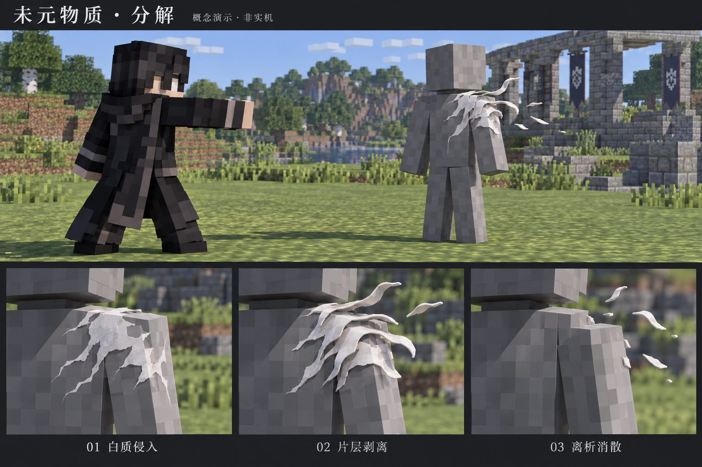
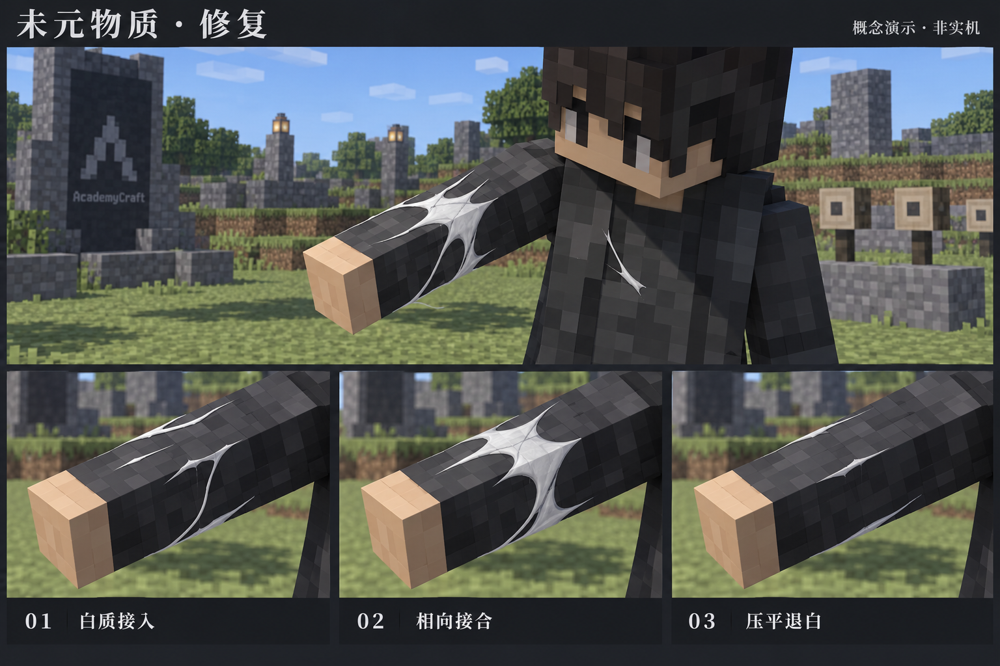

0.00–0.12 s / INTRUSION
局部白质侵入
小范围乳白物质进入表面，沿相邻方向展开成连续窄层。起点明确，前沿尖窄，覆盖区仍能读出目标形体。
DARK MATTER / MATERIAL RECONSTRUCTION
白色物质沿目标表面连续展开，以片层的分离与接合表达破坏和修复。主体有厚度、有背光面；纤维只出现在极细的边缘。
方案已确认 · 已实现并完成实机验证本页保留批准开发时的设计基线，下文“当前具备”与“待实现”均指提案阶段。概念图用于说明造型、材质和动作方向，非实机效果。查看实际 VFXGraph 渲染与游戏截图 →
不透明主体，连续轮廓。白质的出现和运动可读。
用薄厚、折面和遮挡建立体积，亮度服从环境。
轮廓偶有细丝与尖窄分叉，避免整片羽毛贴纸或发光法阵。
侵入 → 外翻错位 → 细片离析 / 0.65 s

0.00–0.12 s / INTRUSION
小范围乳白物质进入表面，沿相邻方向展开成连续窄层。起点明确，前沿尖窄，覆盖区仍能读出目标形体。
0.12–0.38 s / DELAMINATION
白层边缘抬起、折开，露出浅灰侧面。相邻层错开少量距离，出现细长暗缝；活体原模型始终保持完整。
0.38–0.65 s / SEPARATION
外翻层沿生长方向断成少量尖窄细片，离开表面后快速缩短、消隐。结束时目标仍存活则恢复清晰原轮廓。
分解以服务器确认的成功伤害或方块移除为触发。生物伤害可发生在作用点附近，方块破坏继续遵守权限、硬度、连锁与范围判定。
被移除方块可在原位置留下短暂的白体积残影，再拆散残影；它表达移除结果，不延迟或重演服务器方块状态。
接入 → 相向桥接 → 压平退白 / 0.38 s，可续接

0.00–0.08 s / CONNECTION
几条窄白束从目标部位边缘接入，在皮肤、护具或手持物附近建立局部覆盖。起点依附当前姿态，不围绕人物旋转。
0.08–0.26 s / BRIDGING
两侧白层相向长合，形成连续、微有厚度的平整区域。接合发生在视觉覆盖层内部，不把完好的角色模型画成真实伤口。
0.26–0.38 s / SETTLING
层间缝隙闭合、隆起压低，白质从边缘收退，露出原材质。新的成功脉冲续接当前形态；停止修复后完成收尾。
修复是可切换的被动技能。当前工作范围为恢复自身生命、处理负面效果，以及修复原生未元物质装备的完整度。
仅成功工作触发反馈。生命恢复/净化使用 BODY 标记；装备使用实际可见槽位。背包中未持有物品的修复不产生世界特效。
原作提供物质观与形体，动作时序服务本项目。
官方能力说明
官方角色介绍明确：未元物质能创造、操纵这个世界不存在的新物质；它不受既有物理法则约束，并能影响周围法则。由此提取“异常物质有实体”的方向。
《魔法禁书目录 Ⅲ》垣根帝督介绍 ↗轻小说插画 · 作者资料页
参考图中人物为白发、灰白皮肤、红眼、红衣，身体轮廓逸出细长白条。本方案提取条带连续性、尖窄轮廓与实体白质；不把红衣描述为白衣。
灰村清孝资料页 ↗ · 对应设定图 ↗轻小说插画 · 第三方转存
插画一侧人物呈大块白色不规则片层脱落与深暗孔隙，另一侧为完整白化人形。仅提取片层和明暗组织，不由静态图替动作、能力过程或伤势下定论。
新约 6 插画转存 ↗本提案的分解三阶段、修复相向桥接、0.65 / 0.38 秒节奏、局部覆盖和退白，均为面向本项目的原创视觉推演。游戏中的修复范围、MP 消耗/回收与 α/β/γ 参数来自项目实现，不作为原作设定引用。参考插画的深暗孔隙也不等于第一版要切除真实模型。
以下为拟议模块与依赖，尚未实现。
生成可弯折的窄片网格，具备可见侧面、浅灰背面与连续切向。主体使用白色实体材质；极细纤维仅用于轮廓，不复用完整羽毛贴图作为主体。
围绕稳定锚点建立连通片层，沿局部表面参数推进。统一支持外翻分离、相向接合与收退；连续脉冲更新目标进度，保持种子和已形成部分稳定。
从片层实际断开边缘派生少量细片，继承局部方向，随后缩短、消隐。设定明确寿命和总量上限，不累积无期限粒子或弥漫白雾。
使用本项目自带的 VFXGraph 和内置特效编辑器编排、预览与调参。模块应开放稳定的公共方法/节点，接收目标表面、锚点、姿态、部位与进度；客户端渲染不决定伤害、修复或资源。接口可供技能、精密操作系统与非玩家实体复用。
| 输入或能力 | 当前具备 | 本方案的处理 |
|---|---|---|
| 生物表面 | 玩家六部位骨骼盒形代理；其他生物回退至 AABB。 | 第一版用代理局部片层，不声称任意模型蒙皮采样。非人形需克制覆盖或新增专用采样。 |
| 命中点与法线 | 现有分解视觉包未传精确命中位置/法线。 | 定点侵蚀需要新增协议输入；未补充时仅用稳定局部锚点。 |
| 施术者相态 | 当前实体附着包取受击者相态；普通生物使用默认权重。 | 表现施术者 α/β/γ 差异需要新增传参，不能把现有包当作施术者数据。 |
| 方块原材质 | 只有被移除位置、盒边界和裸露面；无原 BlockState/模型快照。 | 用白体积残影承接结果。按原材质逐层剥落属于后续快照依赖。 |
| 修复部位与脉冲 | 成功部位掩码；同部位 5 tick 去重，8 tick 视觉租约。 | 按部位接续 0.38 秒动画；仅修复背包物品时不产生世界 VFX。 |
| 死亡与 MP 入账 | finished 表示死亡/方块移除；未携带实际 MP 回收事件。 | 死亡可扩大脱离量；回收提示需独立成功入账信号，不由死亡或普通命中推断。 |
| 真实模型切除 | 当前仅附加视觉层，没有修改实体 mesh。 | 第一版继续保持真实模型完整；不制作身体消失、缺肢或真实伤口。 |
近景每个目标约 6–12 条主片层、最多 24 枚短寿命碎屑；同一身体部位使用一组持续状态。中远景减少片层和纤维，保留动作前沿。
继续受现有 64 个活动效果 / 512 个状态 上限管理。大范围方块分解优先合并邻接残影、减少内部面。以上是设计起点，不代表已测帧率或最终容量。
正面、侧面和运动姿态均能读出连续白质与片层厚度；缩小画面后分解的向外分离、修复的相向接合仍可区分。覆盖不遮蔽活体身份与轮廓。
以相同视距的实机截图对照概念图，检查日夜、第一/第三人称、移动、持续修复、死亡、方块批量移除与多人场景。AI 概念图的细腻光照不代表已实现的着色能力；预算和画质均待实测。